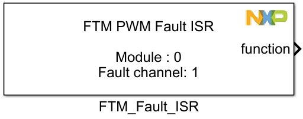
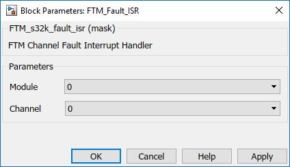

FTM Fault Interrupt Block
The main functionality of the block is to generate a function call on a fault channel.
Block Image
Inputs:
- None
Outputs:
- Function-call
Parameters and Dialog Box
Module
Select which FTM module to use.
- Range: 0 – FTMn
Channel
Select which FTM Channel channel to trigger the function.
- Range: 0 – 4 (For FTM0, FTM1, FTM2, FTM3)
- Range: 0 – 2 (For FTM4, FTM5, FTM6, FTM7)
Block Dependency
Before using this block a FTM PWM Config Block needs to be added and configured on the same FTMn module.
In order to enable the Fault interrupts, the follwing steps must be done in the FTM PWM Config Block:
- The "Show advanced options" must be checked, in order to access the Faults tabs.
- The "Enable Fault Protection" and the "Enable Fault Interrupt" settings must be checked int he Faults tab.
- The "Fault Interrupt Priority" must be set at the desired value.
- For each enabled channel the checkboxes must be checked, Polarity set to Actove High on Low ans the Fault pin must be selected.
- For each enabled channel a Fault Isr block must be added.
Block Miscellaneous Details:
- None